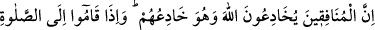
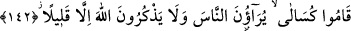

Ancak faydasız dünyâ kelâmı, bütün vakitlerini doldurur. Ondan hiç usanmazlar.”
143- Arada bocalayıp dururlar; ne onlara (bağlanıyorlar) ne bunlara. Allah’ın
şaşırttığı kimseye asla bir (çıkar) yol bulamazsın.
“Arada” îmanla küfür arasında “bocalayıp dururlar” şaşkın bir durumda gidip
gelirler, birinde karar kılamazlar. Onları böyle kararsız kılan şeytan ve hevalarıdır.
“Müzebzeb” iki şey arasında bocalayan, bir ona, bir diğerine giden demektir.
“Ne onlara ne bunlara” yâni mü’minlere tam bir teslimiyetle bağlanmazlar ki
mü’min olsunlar. Açıkça kâfirlerden yana görünmezler ki, kâfir olsunlar.
Hidâyete ve muvaffak kılınmaya istidâdı olmadığı için “Allah’ın şaşırttığı kimseye”
artık onu hidâyete erdirmek şöyle dursun onun için “aslâ” Hakk’a ulaştıran “bir yol
bulamazsın.” Buradaki hitap, kim olursa olsun hitaba elverişli olan herkesedir.
Rasûlullah (s.a.v) mü’min, münâfık ve kâfirlerin durumunu bir nehre atılan üç kimseye
benzetir. Mü’min nehri geçer. Kâfir olduğu yerde kalır. Münâfık ise, nehri geçmeye
teşebbüs eder, fakat ortasına geldiğinde muvaffak olamayacağını anlar. O vakit kâfir
ona: “Bana doğru gel de boğulmayasın.” diye seslenir. Mü’min de ona: “Benden tarafa
gel de kurtul.” diye bağırır. Bunun üzerine münâfık ne tarafa gideceğine bir türlü karar
veremez. Tereddüt içinde oyalanırken boğulup gider. İşte münâfık şüpheden ölene kadar
kurtulamaz.”[194]
Gönlünde nifak olan kimsenin
Boğazına diken batsın
Kim nifakı kendine sıfat edinirse
Hâlik’ın ve halkın yanında kendini rezil rüsvây eder
“Şüphesiz münâfıklar” dünyâda “Allah’a oyun etmeye kalkışıyorlar; halbuki Allah”
ezelde ruhlar üzerine nûrundan saçtığı zaman “onların oyunlarını başlarına
çevirmiştir.” Şöyle ki:
Allah mahlûkatı bir karanlık içinde yarattı. Sonra onların üzerine nurunu saçtı. İşte o
nur mü’minlerin ruhlarına isâbet etti. Münâfık ve kâfirlerin ruhları ondan bir nasib
alamadı. Münâfıklarla kâfirlerin farkı şöyle oldu: Münâfıkların ruhları nûrun
parıldayışını görebildiler ve kendilerine isabet edeceğini zannettiler. Oysa kendilerine